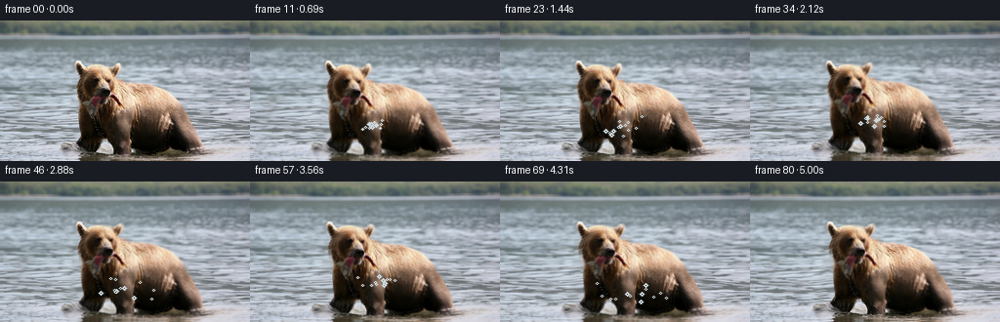
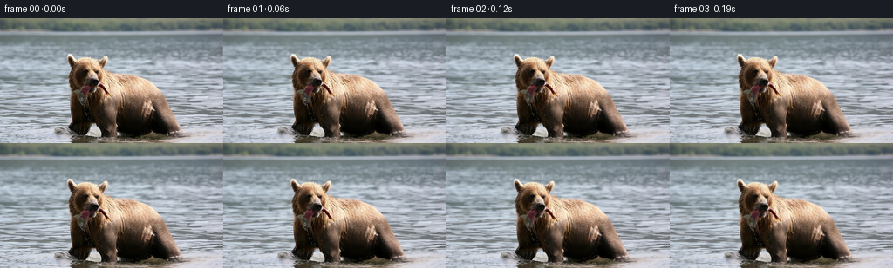

候选 01 · 2026-11-08T20:28:43.785709+00:00 · 点开播放与检查图
inspection.png

transition_check.png

代码变化
--- 上一保存版本
+++ 本次保存版本
@@ -0,0 +1,136 @@
+"""Pixel-based animation of the supplied bear-and-fish photograph.
+
+The source image is kept intact at frame zero. Later frames use gentle
+piecewise warps, animated water displacement, specular ripples and a small
+amount of spray to suggest the bear wading forward with its catch.
+"""
+from pathlib import Path
+import numpy as np
+from PIL import Image
+import cv2
+from artifact_io import save
+
+ROOT = Path(__file__).resolve().parent
+src = np.asarray(Image.open(ROOT / "first_frame.png").convert("RGB"), np.uint8)
+H, W = src.shape[:2]
+yy, xx = np.mgrid[0:H, 0:W].astype(np.float32)
+
+# Soft masks derived from geometry/color, not an external segmentation.
+def ellipse(cx, cy, rx, ry, feather=4.0):
+ d = np.sqrt(((xx-cx)/rx)**2 + ((yy-cy)/ry)**2)
+ return np.clip((1.0 + feather/max(rx,ry) - d) * max(rx,ry)/feather, 0, 1)
+
+def smooth(a, sigma):
+ return cv2.GaussianBlur(a.astype(np.float32), (0, 0), sigma)
+
+# The visible animal occupies the center-lower image. Separate head from
+# shoulder so breathing/head lift is possible without a cardboard translation.
+bear = ellipse(133, 111, 57, 72, 8) * np.clip((yy-37)/13, 0, 1)
+head = ellipse(104, 76, 30, 39, 7)
+body = np.maximum(ellipse(142, 119, 65, 47, 8), ellipse(112, 109, 37, 58, 8))
+# Long catch projecting right from the muzzle (mostly from x=130 onward).
+fish = ellipse(166, 112, 43, 21, 5) * np.clip((xx-122)/16, 0, 1)
+subject = np.clip(np.maximum(bear, fish), 0, 1)
+subject = smooth(subject, 2.2)
+water_mask = 1.0 - smooth(subject, 5.0)
+
+# Deterministic fine texture field used only to modulate water highlights.
+rng = np.random.default_rng(872)
+noise = rng.normal(0, 1, (H, W)).astype(np.float32)
+noise = cv2.GaussianBlur(noise, (0,0), 1.4)
+noise /= noise.std() + 1e-6
+
+def remap_rgb(img, mx, my):
+ return cv2.remap(img, mx.astype(np.float32), my.astype(np.float32),
+ cv2.INTER_LINEAR, borderMode=cv2.BORDER_REFLECT_101)
+
+def add_ripples(frame, t, vigor):
+ """Paint subtle photographic horizontal wave glints around the animal."""
+ f = frame.astype(np.float32)
+ # Expanding bow waves centered near the chest, plus traveling surface wavelets.
+ dx, dy = xx-130.0, yy-116.0
+ rad = np.sqrt((dx/1.35)**2 + (dy*1.8)**2)
+ ring1 = np.exp(-((rad-(19+13*t)) / 2.0)**2)
+ ring2 = np.exp(-((rad-(32+17*t)) / 2.7)**2)
+ horiz = (np.sin(xx*.155 + yy*.52 - t*8.0) +
+ .55*np.sin(xx*.31 - yy*.21 + t*5.4))
+ depth = np.clip((yy-77)/62, 0, 1)
+ r = (ring1*.9 + ring2*.55 + .11*horiz*depth) * water_mask
+ # Ripples brighten blue-gray crests and darken their immediate troughs.
+ f += r[...,None] * np.array([13,18,21], np.float32) * vigor
+ f += (noise[...,None] * depth[...,None] * water_mask[...,None] * .55)
+ return np.clip(f,0,255)
+
+def spray(frame, k, t):
+ """Short arcs of tiny droplets around the moving muzzle/chest."""
+ if k < 10:
+ return frame
+ f = frame.copy()
+ # deterministic particles born in three pulses; trajectories are analytic
+ for pulse in (10, 31, 52):
+ age = (k-pulse)/16.0
+ if not (0 <= age <= 1.2):
+ continue
+ prng = np.random.default_rng(9000+pulse)
+ for j in range(13):
+ x0 = 124 + prng.uniform(-10,16)
+ y0 = 105 + prng.uniform(-4,7)
+ vx = prng.uniform(-25,31)
+ vy = prng.uniform(-28,-11)
+ px = int(round(x0 + vx*age))
+ py = int(round(y0 + vy*age + 26*age*age))
+ if 1 <= px < W-1 and 1 <= py < H-1:
+ a = max(0., 1-age/1.25) * prng.uniform(.35,.72)
+ col = np.array([205,218,222],np.float32)
+ rr = 1 if j%4 else 2
+ cv2.circle(f, (px,py), rr, tuple(map(int,col)), -1, cv2.LINE_AA)
+ if a < 0.5:
+ f[py,px] = ((1-a)*frame[py,px] + a*col).astype(np.uint8)
+ return f
+
+frames = np.empty((81,H,W,3), np.uint8)
+frames[0] = src
+for k in range(1,81):
+ t = k/80.0
+ # Smooth forward surge and natural two-cycle bob. Starts at zero displacement.
+ ease = 3*t*t - 2*t*t*t
+ bob = np.sin(2*np.pi*1.55*t) * np.sin(np.pi*t)
+ breathe = np.sin(2*np.pi*0.72*t) * np.sin(np.pi*t)
+ # Background water drifts laterally and undulates more strongly lower down.
+ depth = np.clip((yy-38)/106,0,1)
+ bg_dx = (1.8*ease + .72*np.sin(2*np.pi*t*1.1)*depth)
+ bg_dy = (.34*np.sin(xx*.062 + t*5.4) + .20*np.sin(xx*.15-t*7))*depth
+ bg = remap_rgb(src, xx-bg_dx, yy-bg_dy)
+
+ # Subject slowly advances right; head nod and body/heave differ slightly.
+ sx_body = 4.0*ease + .65*breathe
+ sy_body = -1.0*ease + 1.35*bob
+ sx_head = 4.8*ease + .45*bob
+ sy_head = -1.45*ease + 1.85*bob + .45*breathe
+ mx_b, my_b = xx-sx_body, yy-sy_body
+ moved_body = remap_rgb(src, mx_b, my_b)
+ moved_head = remap_rgb(src, xx-sx_head, yy-sy_head)
+ # Fish swings subtly as it hangs in the jaws.
+ swing = 1.15*np.sin(2*np.pi*1.55*t + .35)*np.sin(np.pi*t)
+ moved_fish = remap_rgb(src, xx-(5.3*ease), yy-(-.6*ease+swing))
+
+ hb = np.clip(head*(1-fish),0,1)[...,None]
+ fb = fish[...,None]
+ sb = subject[...,None]
+ subj_img = moved_body.astype(np.float32)*(1-hb-fb) + moved_head.astype(np.float32)*hb + moved_fish.astype(np.float32)*fb
+ out = bg.astype(np.float32)*(1-sb) + subj_img*sb
+ out = add_ripples(out, t, .75+0.35*abs(bob))
+
+ # A low wake slides behind the bear, keeping additions restrained.
+ wake = np.exp(-((yy-(126+2*np.sin(t*6))) / 3.0)**2) * np.exp(-((xx-(94+20*t))/55)**2)
+ wake *= np.clip((122-xx)/35,0,1) * (.35+.65*np.sin(np.pi*t))
+ out += wake[...,None]*np.array([10,14,16],np.float32)
+
+ # Minute global exposure variation gives living reflected light.
+ out *= 1.0 + .006*np.sin(2*np.pi*t*1.25)
+ out = spray(np.clip(out,0,255).astype(np.uint8), k, t)
+ frames[k] = out
+
+# Exact contract guarantee.
+frames[0] = src
+save(frames, ROOT)
命令 10 · 2026-11-08T20:28:40.895447+00:00/bin/bash -lc "cat > generate.py <<'PY'
\"\"\"Pixel-based animation of the supplied bear-and-fish photograph.
The source image is kept intact at frame zero. Later frames use gentle
piecewise warps, animated water displacement, specular ripples and a small
amount of spray to suggest the bear wading forward with its catch.
\"\"\"
from pathlib import Path
import numpy as np
from PIL import Image
import cv2
from artifact_io import save
ROOT = Path(__file__).resolve().parent
src = np.asarray(Image.open(ROOT / \"first_frame.png\").convert(\"RGB\"), np.uint8)
H, W = src.shape[:2]
yy, xx = np.mgrid[0:H, 0:W].astype(np.float32)
# Soft masks derived from geometry/color, not an external segmentation.
def ellipse(cx, cy, rx, ry, feather=4.0):
d = np.sqrt(((xx-cx)/rx)**2 + ((yy-cy)/ry)**2)
return np.clip((1.0 + feather/max(rx,ry) - d) * max(rx,ry)/feather, 0, 1)
def smooth(a, sigma):
return cv2.GaussianBlur(a.astype(np.float32), (0, 0), sigma)
# The visible animal occupies the center-lower image. Separate head from
# shoulder so breathing/head lift is possible without a cardboard translation.
bear = ellipse(133, 111, 57, 72, 8) * np.clip((yy-37)/13, 0, 1)
head = ellipse(104, 76, 30, 39, 7)
body = np.maximum(ellipse(142, 119, 65, 47, 8), ellipse(112, 109, 37, 58, 8))
# Long catch projecting right from the muzzle (mostly from x=130 onward).
fish = ellipse(166, 112, 43, 21, 5) * np.clip((xx-122)/16, 0, 1)
subject = np.clip(np.maximum(bear, fish), 0, 1)
subject = smooth(subject, 2.2)
water_mask = 1.0 - smooth(subject, 5.0)
# Deterministic fine texture field used only to modulate water highlights.
rng = np.random.default_rng(872)
noise = rng.normal(0, 1, (H, W)).astype(np.float32)
noise = cv2.GaussianBlur(noise, (0,0), 1.4)
noise /= noise.std() + 1e-6
def remap_rgb(img, mx, my):
return cv2.remap(img, mx.astype(np.float32), my.astype(np.float32),
cv2.INTER_LINEAR, borderMode=cv2.BORDER_REFLECT_101)
def add_ripples(frame, t, vigor):
\"\"\"Paint subtle photographic horizontal wave glints around the animal.\"\"\"
f = frame.astype(np.float32)
# Expanding bow waves centered near the chest, plus traveling surface wavelets.
dx, dy = xx-130.0, yy-116.0
rad = np.sqrt((dx/1.35)**2 + (dy*1.8)**2)
ring1 = np.exp(-((rad-(19+13*t)) / 2.0)**2)
ring2 = np.exp(-((rad-(32+17*t)) / 2.7)**2)
horiz = (np.sin(xx*.155 + yy*.52 - t*8.0) +
.55*np.sin(xx*.31 - yy*.21 + t*5.4))
depth = np.clip((yy-77)/62, 0, 1)
r = (ring1*.9 + ring2*.55 + .11*horiz*depth) * water_mask
# Ripples brighten blue-gray crests and darken their immediate troughs.
f += r[...,None] * np.array([13,18,21], np.float32) * vigor
f += (noise[...,None] * depth[...,None] * water_mask[...,None] * .55)
return np.clip(f,0,255)
def spray(frame, k, t):
\"\"\"Short arcs of tiny droplets around the moving muzzle/chest.\"\"\"
if k < 10:
return frame
f = frame.copy()
# deterministic particles born in three pulses; trajectories are analytic
for pulse in (10, 31, 52):
age = (k-pulse)/16.0
if not (0 <= age <= 1.2):
continue
prng = np.random.default_rng(9000+pulse)
for j in range(13):
x0 = 124 + prng.uniform(-10,16)
y0 = 105 + prng.uniform(-4,7)
vx = prng.uniform(-25,31)
vy = prng.uniform(-28,-11)
px = int(round(x0 + vx*age))
py = int(round(y0 + vy*age + 26*age*age))
if 1 <= px < W-1 and 1 <= py < H-1:
a = max(0., 1-age/1.25) * prng.uniform(.35,.72)
col = np.array([205,218,222],np.float32)
rr = 1 if j%4 else 2
cv2.circle(f, (px,py), rr, tuple(map(int,col)), -1, cv2.LINE_AA)
if a < 0.5:
f[py,px] = ((1-a)*frame[py,px] + a*col).astype(np.uint8)
return f
frames = np.empty((81,H,W,3), np.uint8)
frames[0] = src
for k in range(1,81):
t = k/80.0
# Smooth forward surge and natural two-cycle bob. Starts at zero displacement.
ease = 3*t*t - 2*t*t*t
bob = np.sin(2*np.pi*1.55*t) * np.sin(np.pi*t)
breathe = np.sin(2*np.pi*0.72*t) * np.sin(np.pi*t)
# Background water drifts laterally and undulates more strongly lower down.
depth = np.clip((yy-38)/106,0,1)
bg_dx = (1.8*ease + .72*np.sin(2*np.pi*t*1.1)*depth)
bg_dy = (.34*np.sin(xx*.062 + t*5.4) + .20*np.sin(xx*.15-t*7))*depth
bg = remap_rgb(src, xx-bg_dx, yy-bg_dy)
# Subject slowly advances right; head nod and body/heave differ slightly.
sx_body = 4.0*ease + .65*breathe
sy_body = -1.0*ease + 1.35*bob
sx_head = 4.8*ease + .45*bob
sy_head = -1.45*ease + 1.85*bob + .45*breathe
mx_b, my_b = xx-sx_body, yy-sy_body
moved_body = remap_rgb(src, mx_b, my_b)
moved_head = remap_rgb(src, xx-sx_head, yy-sy_head)
# Fish swings subtly as it hangs in the jaws.
swing = 1.15*np.sin(2*np.pi*1.55*t + .35)*np.sin(np.pi*t)
moved_fish = remap_rgb(src, xx-(5.3*ease), yy-(-.6*ease+swing))
hb = np.clip(head*(1-fish),0,1)[...,None]
fb = fish[...,None]
sb = subject[...,None]
subj_img = moved_body.astype(np.float32)*(1-hb-fb) + moved_head.astype(np.float32)*hb + moved_fish.astype(np.float32)*fb
out = bg.astype(np.float32)*(1-sb) + subj_img*sb
out = add_ripples(out, t, .75+0.35*abs(bob))
# A low wake slides behind the bear, keeping additions restrained.
wake = np.exp(-((yy-(126+2*np.sin(t*6))) / 3.0)**2) * np.exp(-((xx-(94+20*t))/55)**2)
wake *= np.clip((122-xx)/35,0,1) * (.35+.65*np.sin(np.pi*t))
out += wake[...,None]*np.array([10,14,16],np.float32)
# Minute global exposure variation gives living reflected light.
out *= 1.0 + .006*np.sin(2*np.pi*t*1.25)
out = spray(np.clip(out,0,255).astype(np.uint8), k, t)
frames[k] = out
# Exact contract guarantee.
frames[0] = src
save(frames, ROOT)
PY
python3 generate.py
python3 - <<'PY'
import numpy as np
from PIL import Image
z=np.load('pixels.npz')['pixels']
a=np.array(Image.open('first_frame.png'))
p=((a[...,0].astype(np.uint32)<<16)|(a[...,1].astype(np.uint32)<<8)|a[...,2]).astype(np.uint32)
print('packed',z.shape,'first exact',np.array_equal(z[:,:,0],p))
# temporal differences
fs=[]
for i in [0,1,10,20,40,60,80]:
q=np.array(Image.open(f'frames/{i:02d}.png')).astype(int)
fs.append((i,np.abs(q-a).mean(),np.quantile(np.abs(q-a),.95)))
print(fs)
PY"exit 0